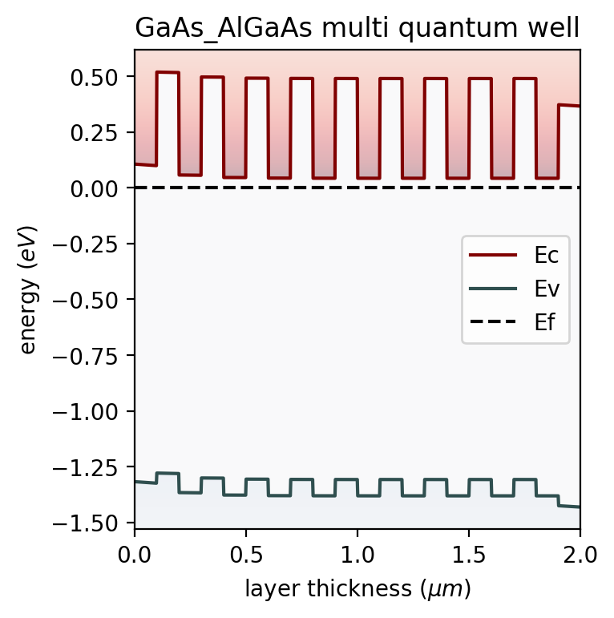

Python · Semiconductor visualization
Band Diagram
A one-dimensional plotter for semiconductor energy bands. It visualizes conduction and valence bands, Fermi levels and vacuum levels across device layers, including examples with applied bias. Shown here is a GaAs/AlGaAs multiple quantum well.